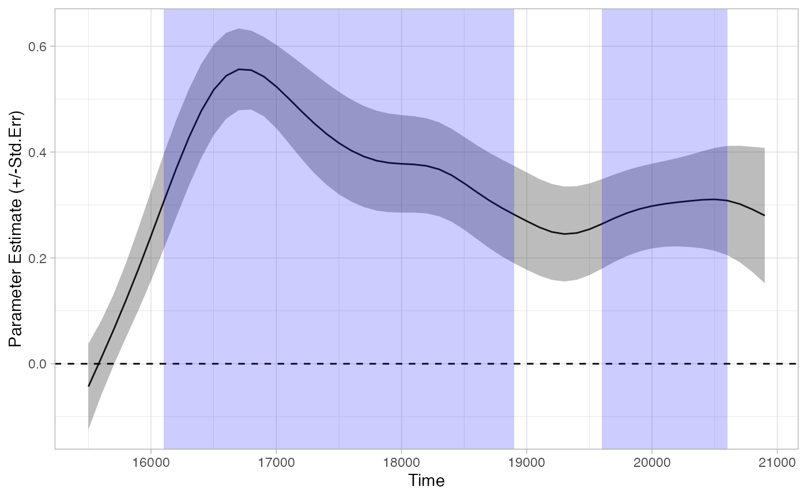
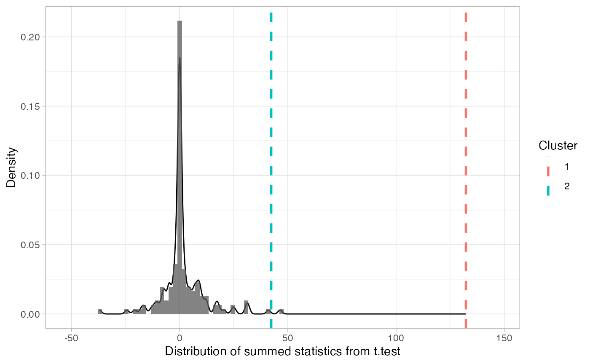

vignettes/divergence_vignette.Rmd
divergence_vignette.RmdOur Experiment: Each eyetrackingR vignette uses the eyetrackingR package to analyze real data from a simple 2-alternative forced choice (2AFC) word recognition task administered to 19- and 24-month-olds. On each trial, infants were shown a picture of an animate object (e.g., a horse) and an inanimate object (e.g., a spoon). After inspecting the images, they disappeared and they heard a label referring to one of them (e.g., “The horse is nearby!”). Finally, the objects re-appeared on the screen and they were prompted to look at the target (e.g., “Look at the horse!”).
In this vignette, we want to ascertain when a predictor had a significant effect during a trial. Analyses that aggregate over the trial window tell us whether an effect was significant, growth curve analyses tell us the trajectory of our effect over the course of the trial, and onset-contingent analyses can tell you reaction times for certain experimental designs. But none of these approaches allow you to ask: What is the onset of some predictor’s effect, and how long does the effect last? eyetrackingR includes two types of analyses for answering these questions, both of which we cover here.
Before performing this analysis, we’ll need to prepare and clean our dataset. Here we will to do this quickly and with few notes but, for more information, see the vignette on preparing your data.
## Loading required package: dplyr##
## Attaching package: 'dplyr'## The following objects are masked from 'package:stats':
##
## filter, lag## The following objects are masked from 'package:base':
##
## intersect, setdiff, setequal, union
data("word_recognition")
data <- make_eyetrackingr_data(word_recognition,
participant_column = "ParticipantName",
trial_column = "Trial",
time_column = "TimeFromTrialOnset",
trackloss_column = "TrackLoss",
aoi_columns = c('Animate','Inanimate'),
treat_non_aoi_looks_as_missing = TRUE
)
# subset to response window post word-onset
response_window <- subset_by_window(data,
window_start_time = 15500,
window_end_time = 21000,
rezero = FALSE)## Avg. window length in new data will be 5500
# analyze amount of trackloss by subjects and trials
(trackloss <- trackloss_analysis(data = response_window))
# remove trials with > 25% of trackloss
response_window_clean <- clean_by_trackloss(data = response_window,
trial_prop_thresh = .25)## Performing Trackloss Analysis...## Will exclude trials whose trackloss proportion is greater than : 0.25## ...removed 33 trials.
# create Target condition column
response_window_clean$Target <- as.factor( ifelse(test = grepl('(Spoon|Bottle)', response_window_clean$Trial),
yes = 'Inanimate',
no = 'Animate') )To begin, we need to use make_time_sequence_data to
generate a time-binned dataframe. We’ll summarize by subjects for
now.
response_time <- make_time_sequence_data(response_window_clean,
time_bin_size = 100,
predictor_columns = c("Target"),
aois = "Animate",
summarize_by = "ParticipantName" )
# visualize timecourse
plot(response_time, predictor_column = "Target") +
theme_light() +
coord_cartesian(ylim = c(0,1))One straightforward method of testing for divergences is simply to perform a statistical test on each time-bin separately. This method is problematic, but walking through it and explaining why will help set up other methods.
EyetrackingR provides analyze_time_bins, a function that
makes sequential tests like this easy to implement.
tb_analysis <- analyze_time_bins(data = response_time, predictor_column = "Target", test = "t.test", alpha = .05)## Computing t.test for each time bin...
plot(tb_analysis, type = "estimate") + theme_light()
summary(tb_analysis)## Test Type: t.test
## Predictor: Target
## Formula: Prop ~ Target
## Runs of Significant Time Bins:
## Positive Run 1 =====
## Time: 16100 - 19300
## Positive Run 2 =====
## Time: 19400 - 21000This method suggests that looking diverges across conditions as early as 16100. However, this method does not control the family-wise error rate–that is, the probability of finding at least one divergence across conditions where none actually exists. Because we are performing so many tests, we are bound to get some statistically significant results, even if no effect is actually present. If there is no real effect, if each test is completely independent, and if our alpha for each test is .05, then the odds of at least one false alarm is…
alpha <- .05
num_time_bins <- nrow(tb_analysis)
(prob_no_false_alarm_per_bin <- 1-alpha)## [1] 0.95
(prob_no_false_alarm_any_bin <- prob_no_false_alarm_per_bin^num_time_bins)## [1] 0.05953856
(prob_at_least_one_false_alarm <- 1-prob_no_false_alarm_any_bin)## [1] 0.9404614…almost 95%! Of course, two of the assumptions I described above aren’t met: the independence assumption isn’t met (clearly a given time-bin should be similar to its neighboring time-bins), and the “no real effect” assumption probably isn’t met (given the analyses in the other vignettes). But we still need to control for family-wise error rate.
One approach is a bonferroni correction. If we simply lower our alpha according to the number of time-bins, then the family-wise error rate goes back down:
alpha <- .05 / num_time_bins
(prob_no_false_alarm_per_bin <- 1-alpha)## [1] 0.9990909
(prob_no_false_alarm_any_bin <- prob_no_false_alarm_per_bin^num_time_bins)## [1] 0.9512078
(prob_at_least_one_false_alarm <- 1-prob_no_false_alarm_any_bin)## [1] 0.04879221We apply this correction by using the
p_adjust_method:
tb_analysis_bonf <- analyze_time_bins(data = response_time, predictor_column = "Target", test = "t.test", alpha = .05,
p_adjust_method = "bonferroni")## Computing t.test for each time bin...
plot(tb_analysis_bonf) + theme_light()
summary(tb_analysis_bonf)## Test Type: t.test
## Predictor: Target
## Formula: Prop ~ Target
## Runs of Significant Time Bins:
## Positive Run 1 =====
## Time: 16300 - 17800
## Positive Run 2 =====
## Time: 18100 - 18500
## Positive Run 3 =====
## Time: 20600 - 20800This method seems overly conservative, and indeed it is: this
correction assumes the ‘worst case scenario’ that all time-bins are
fully independent– which as we mentioned, is clearly not the case. Other
methods are less stringent. Any method available in R’s
p.adjust function are available to
analyze_time_bins. See the documentation of that function
for more details. As mentioned there, there isn’t really a good reason
to use the Bonferroni method, because Holm’s method controls family-wise
error just as well, but sometimes is more powerful:
tb_analysis_holm <- analyze_time_bins(data = response_time, predictor_column = "Target", test = "t.test", alpha = .05,
p_adjust_method = "holm")## Computing t.test for each time bin...
plot(tb_analysis_holm) + theme_light()
summary(tb_analysis_holm)## Test Type: t.test
## Predictor: Target
## Formula: Prop ~ Target
## Runs of Significant Time Bins:
## Positive Run 1 =====
## Time: 16300 - 18500
## Positive Run 2 =====
## Time: 20600 - 20800One concern with multiple-testing using corrections is that it severely limits our power: by controlling the family-wise error rate, we sacrifice our ability to detect effects when they are present.
In fact, even the uncorrected, overly liberal test seems to have made a small error in the conservative direction: it split our runs of statistically significant time-bins in two, due to a small downward blip in one of the time-bins. It seems unlikely the effect actually vanished for this single time bin: instead, it seems more likely that eye-tracking data is noisy, and that we should try to ignore the small variations that are a result of this noise.
One approach is to perform a statistical test that operates over a smoothed version of our data (similar to Wendt et al., 2014). This involves:
smooth.spline(), loess(), or no
smoother)This is a useful technique for estimating the timepoints of divergence between two conditions, while the smoothing helps remove minor deviations that might disrupt what would otherwise be considered a single divergent period. This can be especially helpful in infant data, which can be extremely noisy. Note that this approach can only deal with testing differences across two levels of a predictor (e.g., an experimental manipulation, not a continous covariate).
This method returns a list of divergences between your two conditions based on time windows in which (by default) the 95% confidence intervals did not include 0 (i.e., p < .05).
tb_bootstrap <- analyze_time_bins(response_time, predictor_column = 'Target', test= 'boot_splines',
within_subj = TRUE, bs_samples = 1000, alpha = .05)
plot(tb_bootstrap) + theme_light()
summary(tb_bootstrap)## Test Type: boot_splines
## Predictor: Target
## Formula: Prop ~ Target
## Runs of Significant Time Bins:
## Positive Run 1 =====
## Time: 15900 - 21000We can see that this method (probably correctly) identified that our trial involves a single divergence in looking across conditions, rather than two divergences separated by a single time-bin.
However, it is important to note that this method doesn’t explicitly control the family-wise error rate. And unfortunately, because this test doesn’t produce a p-value for each bin, we can only perform a (manual) Bonferroni-correction.
tb_bootstrap_bonf <- analyze_time_bins(response_time, predictor_column = 'Target', test= 'boot_splines',
within_subj = TRUE, alpha = .05/num_time_bins)
plot(tb_bootstrap_bonf) + theme_light()
summary(tb_bootstrap_bonf)## Test Type: boot_splines
## Predictor: Target
## Formula: Prop ~ Target
## Runs of Significant Time Bins:
## Positive Run 1 =====
## Time: 16100 - 18900
## Positive Run 2 =====
## Time: 19600 - 20600Once correcting, the test suffers from many of the same problems as the Bonferroni t-tests.
Above we saw problems both with false-alarms and sensitivity. This is not a zero-sum game. One approach that offers an excellent compromise between the two is referred to as a cluster-based permutation analysis (Maris & Oostenveld, 2007).
This procedure involves two main steps. First, we run a test on each time bin that quantifies the statistical significance of the effect at each time bin. This acts as a “first pass,” and we group together into clusters all adjacent bins that get through this first pass. We then shuffle the data, performing this test-then-cluster on each iteration of the shuffled data. This shuffled data tells us what kinds of clusters we should expect if there were no effect (i.e., randomly scrambled data).
In more detail, what eyetrackingR does is:
This analysis has two main advantages over the ones reviewed so far:
t.test,
wilcox.test, (g)lm, and (g)lmer),
so that continuous predictors, covariates, etc. can also be included in
the model being tested. We even provide (experimental) support for using
boot-splines as the test performed at each time bin.To perform this analysis, we first need to set a threshold for our “first pass,” for which time-bins will be included in clusters. This can be a source of misconceptions. The size of the initial threshold you set should be set in a principled way (e.g., don’t run the cluster analysis, examine the result, then decide you want to use a different threshold). But perhaps surprisingly, the test controls the family-wise error rate, even if we don’t choose a threshold that corresponds to p = .05. This is because the threshold affects both the first pass and the shuffled data: if we let more time-bins into our intial clusters, then more time-bins will be let into our shuffled data as well, and bigger time-clusters will be expected under the null distribution.
Here, we’ll just set our threshold based on the t-distribution: ~2.06 corresponds to the usual statistic we would use in a t-test for this sample.
num_sub = length(unique((response_window_clean$ParticipantName)))
threshold_t = qt(p = 1 - .05/2,
df = num_sub-1) # pick threshold t based on alpha = .05 two tailedWe can then look for initial clusters:
df_timeclust <- make_time_cluster_data(response_time,
test= "t.test", paired=T,
predictor_column = "Target",
threshold = threshold_t)
plot(df_timeclust) + ylab("T-Statistic") + theme_light()
summary(df_timeclust)## Test Type: t.test
## Predictor: Target
## Formula: Pair(Prop[Target == "Animate"], Prop[Target == "Inanimate"]) ~ 1
## Summary of Clusters ======
## Cluster Direction SumStatistic StartTime EndTime
## 1 1 Positive 132.29900 16100 19300
## 2 2 Positive 42.31067 19400 20800The above tells us there are two potential clusters. As described in the procedure above, eyetrackingR next bootstraps a “null” distribution, which can be visualized:
clust_analysis <- analyze_time_clusters(df_timeclust, within_subj=TRUE, paired=TRUE,quiet = TRUE,
samples=150) # in practice, you should use a lot more
plot(clust_analysis) + theme_light()
How can we interpret these results?
summary(clust_analysis)## Test Type: t.test
## Predictor: Target
## Formula: Pair(Prop[Target == "Animate"], Prop[Target == "Inanimate"]) ~ 1
## Null Distribution ======
## Mean: 0.5894
## 2.5%: -21.7784
## 97.5%: 24.6837
## Summary of Clusters ======
## Cluster Direction SumStatistic StartTime EndTime Probability
## 1 1 Positive 132.29900 16100 19300 0.000000000
## 2 2 Positive 42.31067 19400 20800 0.006666667The probabilities listed above tell us the probability of seeing the effect of each cluster (or bigger) if the null-hypothesis were true. Of course, these probabilities aren’t accurate unless we run enough iterations to get a fuller simulation of the whole null distribution (we’ve just ommitted this for purposes of speed).
Note that we actually ended up getting virtually identical results to our initial analysis of sequential time-bins! That’s because the effect here was quite large; we didn’t have to worry about spuriously significant time-bins because there probably weren’t any.
Let’s run a quick analysis that does a better job of showing off the virtues of cluster analysis. We’ll examine the hypothesis that infants with higher MCDI vocabulary scores have a baseline bias to look at the animate object. Note that this is different from the hypothesis that high-vocab infants are likely to look at the trial target; we are instead examining the unlikely hypothesis that high-vocab infants have a baseline preference.
This analysis is good for showing off the virtues of cluster analysis
for two reasons. First, the effect is unlikely to be real, but (we will
see that) sequential independent tests at each time-bin give some
false-alarms. Second, this effect can’t be assessed with analyses that
only allow for testing two-level factors (like t-tests), because our
predictor is continuous. EyetrackingR allows us to accomplish this quite
easily by using lm as our test instead of
t-test.
response_time_between <- make_time_sequence_data(response_window_clean,
time_bin_size = 100,
predictor_columns = c("Sex", "MCDI_Total"),
aois = "Animate",
summarize_by = "ParticipantName" )
df_timeclust_between <- make_time_cluster_data(response_time_between,
test= "lm",
predictor_column = "MCDI_Total",
threshold = threshold_t)
plot(df_timeclust_between) + ylab("T-Statistic") + theme_light()
summary(df_timeclust_between)## Test Type: lm
## Predictor: MCDI_Total
## Formula: Prop ~ MCDI_Total
## Summary of Clusters ======
## Cluster Direction SumStatistic StartTime EndTime
## 1 1 Negative -6.766357 16100 16400If we used the uncorrected sequential test method, we would get what appears to be a statistically significant preference for the animate object among high-vocab children early in the trial. Should we trust this as a real effect?
set.seed(5)
clust_analysis_between <- analyze_time_clusters(df_timeclust_between, within_subj = FALSE, quiet = TRUE,
samples=150) # in practice, you should use a lot more
plot(clust_analysis_between) + theme_light()
summary(clust_analysis_between)## Test Type: lm
## Predictor: MCDI_Total
## Formula: Prop ~ MCDI_Total
## Null Distribution ======
## Mean: -0.2957
## 2.5%: -23.0358
## 97.5%: 23.4564
## Summary of Clusters ======
## Cluster Direction SumStatistic StartTime EndTime Probability
## 1 1 Negative -6.766357 16100 16400 0.2933333Cluster-analysis (probably correctly) says no: we should expect to get a divergence at least this large ~%25 of the time under the null-hypothesis.
Maris, E., Oostenveld, R., (2007). Nonparametric statistical testing of EEG- and MEG-data. Journal of Neuroscience Methods 164 (1), 177–190.
Wendt, D., Brand, T., & Kollmeier, B. (2014). An Eye-Tracking Paradigm for Analyzing the Processing Time of Sentences with Different Linguistic Complexities. PLoS ONE, 9(6), e100186. https://doi.org/10.1371/journal.pone.0100186.t003